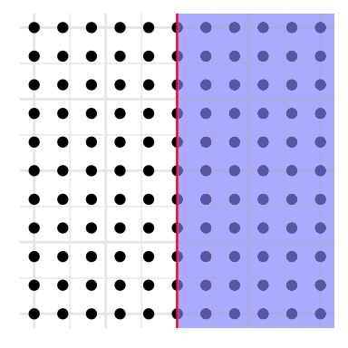

Let \(\sh V\) be the Hilbert space of fermionic single particle creation operators \(c_i^\dagger\). The dual space \(\sh V^*\) consists of single particle annihilation operators \(c_i\). There is a fundamental anti-linear operation \[ c_i^\dagger\longmapsto c_i. \]
Formally, this is the Fréchet–Riesz isomorphism \[ R:\sh V\longrightarrow\sh V^*,\quad (R\psi_1)(\psi_2)\defi\langle\psi_1\mid\psi_2\rangle. \]
On Nambu space \(\sh W\defi\sh V\oplus\sh V^*\), this assembles to \[ \gamma\defi \begin{pmatrix} 0&R^{-1}\\ R&0 \end{pmatrix},\quad\gamma^*=\gamma,\quad\gamma^2=1. \]
Definition. An anti-unitary endomorphism \(\gamma\) of a Hilbert space \(\sh W\) is called a real structure if \(\gamma^2=1\). Such a pair \((\sh W,\gamma)\) is called a real Hilbert space.
Recall that a subalgebra \(A\subseteq\sh L(\sh H)\), where \(\sh H\) is some Hilbert space, is called a C\(^*\)-algebra if \(A\) is closed under the norm and taking the adjoint.
The real structure \(\gamma\) encodes the fermionic CAR relations: \[ \{\psi_1,\psi_2\}\defi\langle\gamma\psi_1\mid\psi_2\rangle\quad\Longrightarrow\quad\{c_i^\dagger,c_j\}=\delta_{ij}. \]
A fermionic Hamiltonian has to preserve the CAR relations (Fermi constraint) \[ \{H\psi_1,\psi_2\}+\{\psi_1,H\psi_2\}=0. \]
In terms of \(\gamma\), this can be equivalently expressed as \[ \gamma H^*\gamma=-H. \] (Here, \(H^*\) is a mathematician’s notation for the adjoint operator \(H^\dagger\).)
Definition. Let \(A\) be a C\(^*\)-algebra. An anti-linear involutive \(*\)-automorphism \(x\longmapsto\overline x\) is called a real structure. The pair \((A,\overline\cdot)\) is a real C\(^*\)-algebra. We say \(x\) is real/imaginary if \(\overline x=\pm x\).
The algebra \(\sh L(\sh W)\) of bounded operators on \(\sh W\) carries the real structure \[ \overline x\defi \gamma x\gamma. \] Thus, the Fermi constraint on \(H\) is equivalent to \(H\) being imaginary (and Hermitian).
Time reversal is an anti-unitary endomorphism of \(\sh V\) such that \[ T^2=-1. \]
Definition. An anti-unitary endomorphism \(T\) of a Hilbert space \(\sh V\) is called a quaternionic structure if \(T^2=-1\). The pair \((\sh V,T)\) is a quaternionic Hilbert space.
Given a quaternionic structure \(T\) on \(\sh V\), the bounded operators obtain a real structure: \[ \overline x\defi T^*xT=-TxT. \]
Example. On \(\def\cplxs{\mathbb C}V=\cplxs^2\), we may consider the quaternionic structure \[ \def\ger{\mathfrak} \ger c\defi \begin{pmatrix} 0&\mathsf c\\-\mathsf c&0 \end{pmatrix}, \] where \(\mathsf c\) is complex conjugation. The real elements in \(M_2(\cplxs)=\sh L(\cplxs^2)\) for \(\ger c\) are the quaternions \[ \overline x=x\quad\Longleftrightarrow\quad x= \begin{pmatrix} \alpha&\beta\\ \overline\beta&\overline\alpha \end{pmatrix}. \] We denote the corresponding real C\(^*\)-algebra by \(\mathbb H_\cplxs\).
We work on a square lattice \(\Lambda=\ints^d\) with on-site degrees of freedom encoded in the finite-dimensional Hilbert space \(V\). Thus \[ \sh V=\ell^2(\Lambda)\otimes V,\quad\sh W=\sh V\oplus\sh V^*=\ell^2(\Lambda)\otimes W,\quad W\defi V\oplus V^*. \]
An operator \(O\in\sh L(\sh W)\) has finite hopping (or is controlled) if \[ \exists R>0\colon\quad O=\textstyle\sum_{\norm{x-y}<R}O_{xy}\ket x\bra y,\quad O_{xy}\in\endo W. \] (Here, the convergence is in the weak operator topology.)
Definition/Proposition (Roe 2003). Let \(C^*_u(\Lambda,W)\subseteq\sh L(\sh W)\) be the norm closure of the set of controlled operators. Then \(C^*_u(\Lambda,W)\) is a real C\(^*\)-algebra.
If we replace \(W\) by \(\cplxs\), the resulting C\(^*\)-algebra is denoted \(C^*_u(\Lambda)\) and called the uniform Roe algebra. In general, we might call \(C^*_u(\Lambda,W)\) the algebra of tight-binding observables.
Proposition (Roe 2003). The algebra of translation-invariant tight-binding observables is \[ C^*_u(\Lambda,W)^{\ints^d}\cong\sh C(\reals^d/\Lambda)\otimes\endo W. \] The isomorphism is given by \(O\longmapsto\Parens{k\longmapsto O(k)}\).
Disorder breaks translational invariance microscopically; but at a macroscopic level, it is preserved. How to model this fact?
An argument of (Bellissard 1986; Bellissard 1992) goes roughly as follows:
Definition. The algebra of macroscopically homogeneous tight-binding observables is \[ \mathbb A\defi\Set{O\in\sh C\Parens{\Omega,C^*_u(\Lambda,W)}}{\forall\omega,x\colon O_{\omega\cdot x}=U_x^*O_\omega U_x}, \] the real C\(^*\)-algebra of equivariant maps from disorder configurations to tight-binding operators.
Let \(H\) be a gapped Hamiltonian on \(\sh W\). Using the spectral decomposition \[ H=\int_{\reals\setminus(-\eps,\eps)}\lambda\,dP(\lambda), \] we define \[ J\defi i\int_\eps^\infty dP(\lambda)-i\int_{-\infty}^{-\eps}dP(\lambda). \]
Then we have \[ J^2=-1,\quad J=-J^*, \] and the Fermi constraint \(\overline H=-H\) translates to \[ \overline J=J. \] We call \(J\) an invariant quasi-particle vacuum (or IQPV) if \(H\) is translation invariant, cf. (Kennedy and Zirnbauer 2016).
Definition. A real unitary \(J\in\mathrm U(\mathbb A)\) is called a disordered IQPV if \(J^2=-1\).
| \(s\) | class | symmetries | comments |
|---|---|---|---|
| \(0\) | \(D\) | none | – |
| \(1\) | \(D\mathrm{I\!I\!I}\) | \(T\) | time reversal |
| \(2\) | \(A\mathrm{I\!I}\) | \(T,Q\) | charge |
| \(3\) | \(C\mathrm{I\!I}\) | \(T,Q,C\) | particle-hole symmetry |
| \(4\) | \(C\) | \(S_1,S_2,S_3\) | spin rotations |
| \(5\) | \(C\mathrm I\) | \(S_1,S_2,S_3,T\) | – |
| \(6\) | \(A\mathrm I\) | \(S_1,S_2,S_3,T,Q\) | – |
| \(7\) | \(BD\mathrm I\) | \(S_1,S_2,S_3,T,Q,C\) | – |
Time-reversal symmetry \(T\) is a quaternionic structure on \(V\). We extend it to \(W\) by \[ T\equiv \begin{pmatrix} T&0\\ 0&RTR^{-1} \end{pmatrix}. \]
Physical spin rotations \(S_\mu\in\mathrm U(V)\), \(\mu=1,2,3\), satisfy \[ S_1S_2=-S_2S_1=S_3,\quad S_\mu^2=1,\quad TS_\mu=-S_\mu T, \] and are extended to \(W\) by \[ S_\mu\equiv \begin{pmatrix} S_\mu&0\\0&-RS_\mu R^{-1} \end{pmatrix}. \]
Charge \(Q\) assigns \(\pm1\) to particle creation/annihilation operators, so \[ Q= \begin{pmatrix} 1&0\\ 0&-1 \end{pmatrix}\in\endo{V\oplus V^*}=\endo W. \]
Particle-hole symmetry is \(C\defi\gamma S\) where \(S\in\mathrm U(V)\) satisfies \[ S^2=1,\quad[S,T]=[S,S_\mu]=0, \] and is extended to \(W\) by \[ S\equiv \begin{pmatrix} S&0\\0&RSR^{-1} \end{pmatrix}. \]
| \(s\) | class | symmetries | comments |
|---|---|---|---|
| \(0\) | \(A\) | \(Q\) | charge |
| \(1\) | \(A\mathrm{I\!I\!I}\) | \(Q,C\) | particle-hole conjugation |
Note: If \([H,Q]=0\) and \(\gamma H\gamma=-H\), then \[ H\equiv \begin{pmatrix} H&0\\ 0&-RHR^{-1} \end{pmatrix} \] so in this case, \(H\) is determined by its restriction to \(\sh V\).
How should the symmetries of a Hamiltonian be reflected on the ground state?
Idea (Kennedy and Zirnbauer 2016): assign pseudo-symmetries to symmetries \(g\longmapsto J_\alpha\) such that \[ \forall g\in G_s\colon gH=Hg\quad\Longleftrightarrow\quad \forall \alpha=1,\dotsc,s\colon J_\alpha J=-JJ_\alpha \] where \[ \overline{J_\alpha}=J_\alpha\in\mathrm U(W),\quad J_\alpha J_\beta+J_\beta J_\alpha=-2\delta_{\alpha\beta}. \]
For \(s=0,1,2,3\), this can be achieved by setting \[ J_1\defi J_T\defi \gamma T,\quad J_2\defi J_Q\defi i\gamma TQ,\quad J_3\defi J_C\defi i\gamma CQ=iSQ. \]
For \(s\sge 4\), one doubles \(W\) to \(W\otimes\cplxs^2\) and sets \[ J_\mu\defi iS_\mu\otimes\sigma_z,\quad J_4\defi {\id}_W\otimes i\sigma_y,\quad J_{5/6/7}\defi J_{T/Q/C}\otimes\sigma_x. \]
Definition. A disordered IQPV \(J\) is said to be in symmetry class \(s\) if (with \(J\equiv J\otimes\sigma_x\) in case \(s\sge4\)) \[ JJ_\alpha+J_\alpha J=0,\quad\forall\alpha=1,\dotsc,s. \]
Definition. Let \(\Ccl_{r,s}\) be the C\(^*\)-algebra defined by unitary generators \(k_1,\dotsc,k_r,j_1,\dotsc,j_s\) and relations \[ \left. \begin{aligned} &k_ak_b+k_bk_a=2\delta_{ab}\\ &j_\alpha j_\beta+j_\beta j_\alpha=-2\delta_{\alpha\beta}\\ &k_aj_\alpha+j_\alpha k_a=0 \end{aligned}\right\}\quad\forall a,b=1,\dotsc,r,\alpha,\beta=1,\dotsc,s. \] This is the Clifford algebra with \(r\) positive and \(s\) negative generators.
Universal property. Let \(B\) be a unital C\(^*\)-algebra and \(K_1,\dotsc,K_r,J_1,\dotsc,J_s\in\mathrm U(B)\) be such that \[ \left. \begin{aligned} &K_aK_b+K_bK_a=2\delta_{ab}\\ &J_\alpha J_\beta+J_\beta J_\alpha=-2\delta_{\alpha\beta}\\ &K_aJ_\alpha+J_\alpha K_a=0 \end{aligned}\right\}\quad\forall a,b=1,\dotsc,r,\alpha,\beta=1,\dotsc,s. \] Then there is a unique \(*\)-morphism \[ \Ccl_{r,s}\longrightarrow B,\quad \left. \begin{aligned} &k_a\\ &j_\alpha \end{aligned}\right\}\longmapsto\left\{ \begin{aligned} &K_a\\ &J_\alpha \end{aligned}\right.. \]
In particular, we may define a real structure on \(\Ccl_{r,s}\) by \[ \overline{k_a}\defi k_a,\quad\overline{j_\alpha}\defi j_\alpha. \] Equipped with this real structure, we denote \(\Ccl_{r,s}\) by \(\Cl_{r,s}\).
Real universal property. Let \(B\) be a unital real C\(^*\)-algebra and \(K_1,\dotsc,J_s\in\mathrm U(B)\) be real such that \[ \left. \begin{aligned} &K_aK_b+K_bK_a=2\delta_{ab}\\ &J_\alpha J_\beta+J_\beta J_\alpha=-2\delta_{\alpha\beta}\\ &K_aJ_\alpha+J_\alpha K_a=0 \end{aligned}\right\}\quad\forall a,b=1,\dotsc,r,\alpha,\beta=1,\dotsc,s. \] Then there is a unique real \(*\)-morphism \[ \Ccl_{r,s}\longrightarrow B,\quad \left. \begin{aligned} &k_a\\ &j_\alpha \end{aligned}\right\}\longmapsto\left\{ \begin{aligned} &K_a\\ &J_\alpha \end{aligned}\right.. \]
In particular, \(J_1,\dotsc,J_s\in\mathrm U(W)\) define a real \(*\)-morphism \[ \Cl_{0,s}\longrightarrow\endo W. \]
There is an isomorphism of real C\(^*\)-algebras \(\Cl_{1,1}\longrightarrow M_2(\cplxs)\), defined by \[ k_1\longmapsto\sigma_x,\quad j_1\longmapsto i\sigma_y. \]
This induces the (1,1) periodicity isomorphisms \[ \Cl_{r+1,s+1}\cong \Cl_{r,s}\mathrel{\hat\otimes} M_2(\cplxs). \] Here, the tensor product is graded on the RHS, which means that \[ (I\otimes\sigma)\cdot(I'\otimes\sigma')\defi-(II')\otimes(\sigma\sigma'),\quad\forall I,I'\in\Braces{k_a,j_\alpha},\sigma,\sigma'\in\Braces{\sigma_x,i\sigma_y}. \]
Proposition (Atiyah, Bott, and Shapiro 1964). There are isomorphisms of real C\(^*\)-algebras \[ \Cl_{0,r+2}\cong \Cl_{0,2}\otimes \Cl_{r,0},\quad \Cl_{r+2,0}\cong \Cl_{2,0}\otimes \Cl_{0,r} \]
Together with \[ \Cl_{0,2}\cong\mathbb H_\cplxs,\quad \Cl_{2,0}\cong M_2(\cplxs),\quad\mathbb H_\cplxs\otimes\mathbb H_\cplxs\cong M_4(\cplxs), \] this implies eightfold periodicity \[ \Cl_{0,8}\cong\Cl_{8,0}\cong \Cl_{0,2}\otimes \Cl_{0,2}\otimes \Cl_{2,0}\otimes \Cl_{2,0}\cong \mathbb H_\cplxs\otimes\mathbb H_\cplxs\otimes M_4(\cplxs)\cong M_{16}(\cplxs). \]
Let \(B\subseteq\sh L(\sh H)\) be a real C\(^*\)-algebra such that \(B\sh H=\sh H\). The multiplier algebra \(\mathrm M(B)\) is the idealiser \[ \mathrm M(B)\defi\Set{x\in\sh L(\sh H)}{xB\cup Bx\subseteq B}. \] Let \(\knums\) be the real C\(^*\)-algebra of compact operators on some (separable) real Hilbert space. The stable multiplier algebra and Calkin algebra of \(B\) are, respectively, \[ \mathrm M^s(B)\defi\mathrm M(B\otimes\knums),\quad\mathrm Q^s(B)\defi\mathrm M^s(B)/(B\otimes\knums). \]
Definition (Kasparov 1975). A \(KR^{-p,q}\) cycle is a pair \((\phi,\hat J)\), where \(\phi:\Cl_{q+1,p}\longrightarrow\mathrm M^s(B):k_a,j_\alpha\longmapsto K_a,J_\alpha\) is a real \(*\)-morphism and \(\hat J\in\mathrm M^s(B)\) satisfies \[ \hat J^2\equiv-1\pmod{B\otimes\knums},\quad\hat J=-\hat J^*=\overline{\hat J},\quad \forall a,\alpha\colon\quad\hat JK_a+K_a\hat J=\hat JJ_\alpha+J_\alpha\hat J=0. \] A cycle is called degenerate if \(\hat J^2=-1\). The real \(K\)-theory of \(B\) is \[ KR^{-p,q}(B)\defi\Braces{\text{$KR^{-p,q}$ cycles}}\bigm/\text{homotopy}. \] This set has a natural Abelian group structure; degenerate cycles represent zero (Skandalis 1984).
We have an isomorphism \(KR^{-(p+1),q+1}(B)\cong KR^{-p,q}(B)\), and may define \[ KR^{-p+q}(B)\defi KR^{-p,q}(B). \] Then we have \(KR^{-p+8}(B)\cong KR^{-p}(B)\).
We introduce a boundary \(\Lambda_\partial\defi\ints^{d-1}\times\{0\}\). To connect bulk and boundary, we consider the half-space \[ \hat\Lambda\defi\ints^{d-1}\times\nats,\quad\hat{\sh W}\defi\ell^2(\hat\Lambda)\otimes W. \]

As a closed \(*\)-subalgebra of \(\sh C(\Omega,\sh L(\sh W))\), \(\mathbb A\) is generated by \[ \begin{gathered} \textstyle\sum_{x\in\Lambda}f(\omega\cdot x)\ket x\bra x,\ f\in\sh C(\Omega,\endo W),\\ U_1\defi U_{(1,0,\dotsc,0)},U_2\defi U_{(0,1,0,\dotsc,0)},\dotsc,U_d\defi U_{(0,\dotsc,0,1)}. \end{gathered} \]
Define the half-space algebra \(\hat{\mathbb A}\) to be the closed \(*\)-subalgebra of \(\sh C(\Omega,\sh L(\hat{\sh W}))\) generated by \[ \textstyle\sum_{x\in\Lambda}f(\omega\cdot x)\ket x\bra x,\ f\in\sh C(\Omega,\endo W),\ U_1,\dotsc,U_{d-1},\ \hat U_d, \] where \(\hat U_d\) is the unilateral shift operator \[ \hat U_d\ket{x_1,\dotsc,x_d}\otimes w\defi\ket{x_1,\dotsc,x_{d-1},x_d+1}\otimes w,\quad x_d\sge0. \]
The boundary algebra \(\mathbb A_\partial\) is defined just as \(\mathbb A\), but with \(\Lambda_\partial\cong\ints^{d-1}\) in place of \(\Lambda=\ints^d\).
Proposition (Schulz-Baldes, Kellendonk, and Richter 2000). The assignment \(\hat U_d\longmapsto U_d\) induces a short exact sequence \[ \begin{CD} 0 @>>> {\mathbb A_\partial\otimes\knums(\ell^2(\nats))} @>>> {\hat{\mathbb A}} @>>> {\mathbb A} @>>> 0. \end{CD} \]
Let \(J\in\mathbb A\) be a disordered IQPV in symmetry class \(s\). Let \[ q:\sh W\longrightarrow\hat{\sh W} \] be the orthogonal projection and define \[ \hat J\defi qJq\in\sh C\Parens{\Omega,\sh L(\hat{\sh W})}. \]
Then we have \[ \hat J^2\equiv-1\pmod{\mathbb A_\partial\otimes\knums},\quad\hat J=-\hat J^*=\overline{\hat J},\quad \forall \alpha=1,\dotsc,s\colon\quad\hat JJ_\alpha+J_\alpha\hat J=0. \] Doubling \(W\) to \(W\otimes\cplxs^2\) and using \((1,1)\) periodicity, we obtain \[ K_1\defi 1\otimes\sigma_x,\quad \hat J\equiv\hat J\otimes\sigma_x,\ J_1\equiv J_1\otimes\sigma_x,\dotsc,J_s\equiv J_s\equiv J_s\otimes\sigma_x,\ J_{s+1}\defi1\otimes i\sigma_y. \]
Because \(\hat J\) idealises \(\mathbb A_\partial\otimes\knums(\ell^2(\nats))\), we have \(\hat J\in M^s(\mathbb A_\partial\otimes\knums)\), so that \(\hat J\) represents a \(KR\) class \[ [J]_\partial\in KR^{-(s+1)}(\mathbb A_\partial). \]
Definition. We call \([J]_\partial\) the boundary class of the disordered IQPV \(J\).
Assume that \(\Omega\) is a Bernoulli shift, i.e. an infinite product of on-site disorder configurations: \[ \Omega=\textstyle\prod_\Lambda\Omega_0. \] Fix some disorder configuration \(\omega_0\in\Omega\). There are real \(*\)-morphisms \[ \iota:C^*_u(\Lambda,W)^{\ints^d}\longrightarrow\mathbb A:O\longmapsto(\omega\longmapsto O),\quad\eps_{\omega_0}:\mathbb A\longrightarrow C^*_u(\Lambda,W)^{\ints^d}:O\longmapsto O_{\omega_0}. \]
Then \(\eps_{\omega_0}\circ\iota={\id}\) and if \(\Omega_0\) is contractible, then \(\iota\circ\eps_{\omega_0}\simeq{\id}\).
Proposition. If \(\Omega\) is the Bernoulli shift of a contractible space, then \[ \begin{gathered} KR^{-s}(\mathbb A)\cong KR^{-s}(\reals^d/\Lambda)=KR^{-s}(\mathbb T^d),\\ KR^{-(s+1)}(\mathbb A_\partial)=KR^{-(s+1)}(\mathbb T^{d-1})=KR^{-(s+2)}(\mathbb T^d). \end{gathered} \] So the \(KR\)-groups are not sensitive to sufficiently ‘small’ disorder.
In particular, we obtain \[ KR^{-(s+2)}(\mathbb A)=KR^{-(s-d+2)}(\mathrm{pt}). \]
| \(s\) | class | \(KR^{-(s+2)}(\mathrm{pt})\) |
|---|---|---|
| \(0\) | \(D\) | \(\ints/2\) |
| \(1\) | \(D\mathrm{I\!I\!I}\) | \(0\) |
| \(2\) | \(A\mathrm{I\!I}\) | \(\ints\) |
| \(3\) | \(C\mathrm{I\!I}\) | \(0\) |
| \(4\) | \(C\) | \(0\) |
| \(5\) | \(C\mathrm I\) | \(0\) |
| \(6\) | \(A\mathrm I\) | \(\ints\) |
| \(7\) | \(BD\mathrm I\) | \(\ints/2\) |
There is a way to assign, to every disordered IQPV \(J\) in symmetry class \(s\), a bulk class \[ [J]\in KR^{-(s+2)}(\mathbb A). \] This uses a different picture of \(KR\)-theory (Van Daele 1988).
The bulk-to-boundary sequence induces a long exact sequence in \(KR\) theory, \[ \begin{CD} \dotsm @>>> KR^{-(s+2)}(\mathbb A_\partial) @>>> KR^{-(s+2)}(\hat{\mathbb A}) @>>> KR^{-(s+2)}(\mathbb A)\\ @>{\partial}>> KR^{-(s+1)}(\mathbb A_\partial) @>>> KR^{-(s+1)}(\hat{\mathbb A}) @>>> KR^{-(s+1)}(\mathbb A) @>>> \dotsm \end{CD} \]
Theorem (A–C. Max). Under the boundary map in the long exact \(KR\) theory sequence, bulk and boundary classes correspond: \[ \partial[J]=[J]_\partial. \]
As a corollary, if the bulk phase \([J]\neq0\), then \(\hat J\) is gapless.
Atiyah, M.F., R. Bott, and A. Shapiro. 1964. “Clifford Modules.” Topology 3 (suppl. 1): 3–38. doi:10.1016/0040-9383(64)90003-5.
Bellissard, J. 1986. “\(K\)-Theory of \(C^\ast\)-Algebras in Solid State Physics.” In Statistical Mechanics and Field Theory: Mathematical Aspects (Groningen, 1985), 257:99–156. Lecture Notes in Phys. Berlin: Springer. doi:10.1007/3-540-16777-3_74.
———. 1992. “Gap Labelling Theorems for Schrödinger Operators.” In From Number Theory to Physics, Les Houches, 1989, 538–630. Berlin: Springer.
Kasparov, G.G. 1975. “Topological Invariants of Elliptic Operators. I. \(K\)-Homology.” Izv. Akad. Nauk SSSR Ser. Mat. 9 (4): 751–92.
Kennedy, R., and M.R. Zirnbauer. 2016. “Bott Periodicity for \(\mathbb{Z}_2\) Symmetric Ground States of Gapped Free-Fermion Systems.” Comm. Math. Phys. 342: 909–63. doi:10.1007/s00220-015-2512-8.
Roe, J. 2003. Lectures on Coarse Geometry. University Series. American Mathematical Society.
Schulz-Baldes, H., J. Kellendonk, and T. Richter. 2000. “Simultaneous Quantization of Edge and Bulk Hall Conductivity.” J. Phys. A 33 (2): L27–L32. doi:10.1088/0305-4470/33/2/102.
Skandalis, G. 1984. “Some Remarks on Kasparov Theory.” J. Funct. Anal. 56 (3): 337–47. doi:10.1016/0022-1236(84)90081-8.
Van Daele, A. 1988. “\(K\)-Theory for Graded Banach Algebras. I.” Quart. J. Math. Oxford Ser. (2) 39 (154): 185–99. doi:10.1093/qmath/39.2.185.